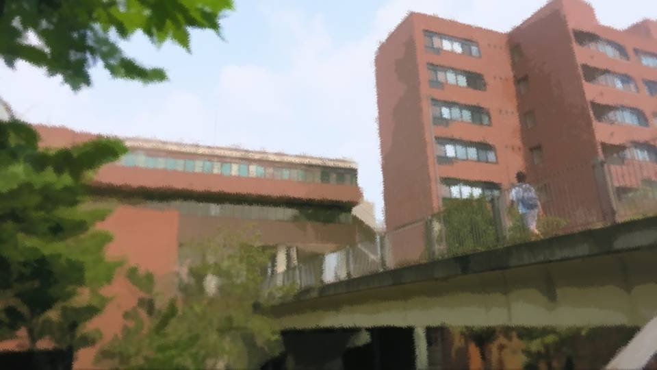
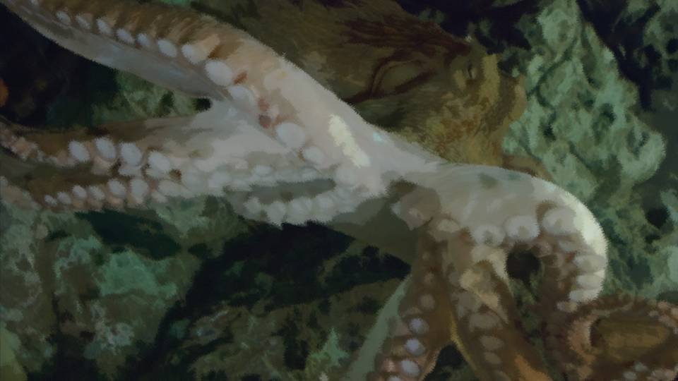
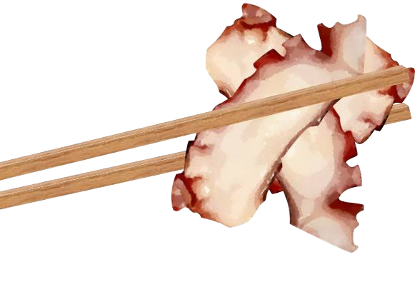
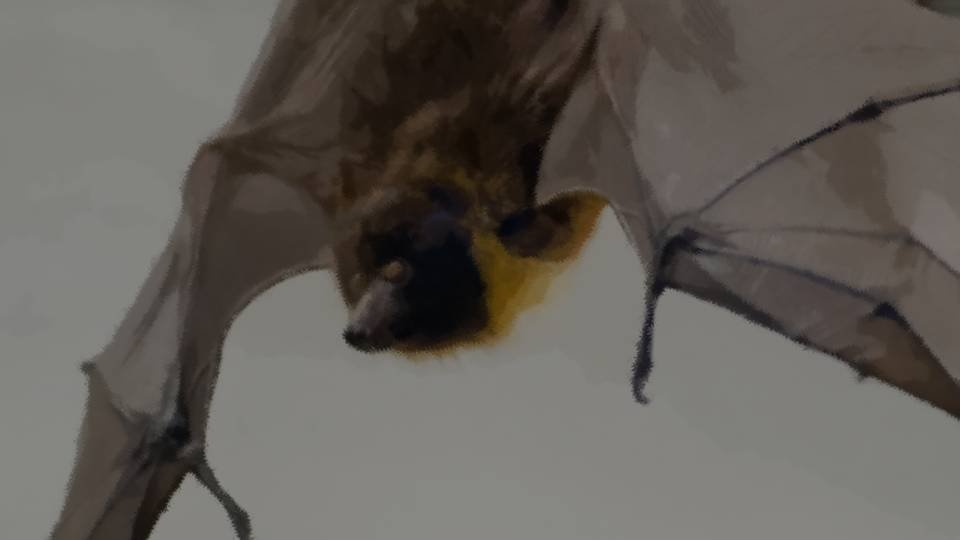

The Master of Contradictions
Shiyo 800, April 1―

One week to the thirteenth-year memorial.
Spring break had ended yesterday, and school today was morning only.
Apparently a girl named Goto was coming to Tokyo today.
Spring break had ended yesterday, and school today was morning only.
Apparently a girl named Goto was coming to Tokyo today.
"Chigaya, this year's freshmen are a lot of fun!
There's a welcome party tonight―you're coming, right!?"
An invitation from Hana-chan, my best friend in Tokyo.
Normally I'd have said yes on the spot, but...
An invitation from Hana-chan, my best friend in Tokyo.
Normally I'd have said yes on the spot, but...
"Mm... Sorry, Hana-chan! I've got relatives coming today..."
"Oh, I see... Well, the freshmen aren't going anywhere, so I'll ask you again next time!"
Lately I'd been turning down a lot of party invitations.
And more and more often, Hana-chan looked a little awkward about asking me.
"Oh, I see... Well, the freshmen aren't going anywhere, so I'll ask you again next time!"
Lately I'd been turning down a lot of party invitations.
And more and more often, Hana-chan looked a little awkward about asking me.

―I went home, washed my face, did my makeup, and put on that going-out outfit again.
The place Auntie had named was that ryotei in Ginza.
Apparently all it took to hook this Goto girl was to dangle some food in front of her, but was a girl like that really going to be all right?
The place Auntie had named was that ryotei in Ginza.
Apparently all it took to hook this Goto girl was to dangle some food in front of her, but was a girl like that really going to be all right?

The place had the same air of luxury as ever.
It was only my second time, and just opening the door made me nervous.
I was running a little past the time we'd agreed on. Were the two of them here already?
It was only my second time, and just opening the door made me nervous.
I was running a little past the time we'd agreed on. Were the two of them here already?

"Welcome, Niimura-sama."
The same attendant as the other day came out to greet me.
I regretted, just a little, wearing the same clothes.
The same attendant as the other day came out to greet me.
I regretted, just a little, wearing the same clothes.
"Allow me to show you the way. Your companions are waiting for you."
So they were already here after all.
We're asking Goto-san to help with a case this serious.
She may be younger than me, but I have to treat her with every courtesy.
So they were already here after all.
We're asking Goto-san to help with a case this serious.
She may be younger than me, but I have to treat her with every courtesy.
"Excuse me. Your companion has arrived."


"Munch munch...
Mm-hm! This flounder sashimi is really delicious!"
"Ohohohoho, Goto-chan! That's sea bream sashimi!"
"Ohohohoho, Goto-chan! That's sea bream sashimi!"

"Hm! And this fugu shabu-shabu here is thick and has a good bite to it. Most delectable!"
"Goto-chan! This is octopus shabu-shabu!"
When I opened the door, the two of them had already started feasting.
"Goto-chan! This is octopus shabu-shabu!"
When I opened the door, the two of them had already started feasting.

Auntie only seemed to be drinking tea, but in front of the girl who had to be Goto-san, expensive dishes were crammed in with no room to spare.
What is this? Not a shred of tension...
What is this? Not a shred of tension...
"Oh, Chigaya-chan, you're here!? Come on, come on, sit down!"
"Oh! So this is Niimura-senpai's cousin, Chigaya-san!?
Pleased to meet you! Motoki-cho's genius girl Erina Goto has descended upon Tokyo!"
Th-this girl is really a genius girl...?
Feasting on the food without a care, and a greeting as breezy as could be...
It threw me completely off...
Th-this girl is really a genius girl...?
Feasting on the food without a care, and a greeting as breezy as could be...
It threw me completely off...
"Mm... I'm Chigaya Niimura.
Thank you so much for coming all this way."
Just as planned, I greeted her with the utmost courtesy.
Just as planned, I greeted her with the utmost courtesy.
"Ooh! So graceful and ladylike...
Niimura-senpai is a whole other story."
"Really! I wish Haruka would learn to carry herself a little more like a lady!"
"Really! I wish Haruka would learn to carry herself a little more like a lady!"
"Ahahaha! But I like Niimura-senpai just the way she is!
Oh! And this is beef nigiri!"
"Ohohoho, Goto-chan! That's pickled red turnip!"
Somehow... didn't my greeting just get skipped right over?
Not ignored, exactly, but it feels like I'm being skipped over.
"Ohohoho, Goto-chan! That's pickled red turnip!"
Somehow... didn't my greeting just get skipped right over?
Not ignored, exactly, but it feels like I'm being skipped over.

"Chigaya-chan, how long are you going to stand there? Sit, sit!"
"Mm... Okay..."
Still thrown off, I sat down next to Auntie.
"Mm... Okay..."
Still thrown off, I sat down next to Auntie.
Even so, this girl really eats a lot.
Maybe she even eats more than I do.
Maybe she even eats more than I do.
"Aren't you two going to eat anything?
You're here, so please eat. Don't be shy!"
"That's right! What'll you have, Chigaya-chan?"
What is with this girl! Auntie is the one paying, isn't she!?
We may be relying on her, but the nerve of her...
Auntie, not looking the least bit bothered by it, handed me the menu.
"That's right! What'll you have, Chigaya-chan?"
What is with this girl! Auntie is the one paying, isn't she!?
We may be relying on her, but the nerve of her...
Auntie, not looking the least bit bothered by it, handed me the menu.
Ugh... as expected, every set was expensive...
How much is just the food on the table already costing?
How much is just the food on the table already costing?
"Mm... I'll have this, the seasonal set..."
"Oh? Oh? That's the cheapest set, isn't it? Could it be, Chigaya-san, that you're a light eater?"
What a nervy girl...! Even I was starting to get a little irritated...
"Oh? Oh? That's the cheapest set, isn't it? Could it be, Chigaya-san, that you're a light eater?"
What a nervy girl...! Even I was starting to get a little irritated...
"I can eat plenty too, if I put my mind to it...!
I've beaten most of the eating-challenge menus I've tried!"
"Ooh!? A rival for this genius girl has appeared, I see!?"
"Oh my, that sounds fun! Then how about a contest to see who can eat more of the sushi here!?"
No, no, wait, wait―what is this old bat saying...!?
Does she know it would run to hundreds of thousands of yen if I really ate in a place like this...!?
"Ooh!? A rival for this genius girl has appeared, I see!?"
"Oh my, that sounds fun! Then how about a contest to see who can eat more of the sushi here!?"
No, no, wait, wait―what is this old bat saying...!?
Does she know it would run to hundreds of thousands of yen if I really ate in a place like this...!?
"That's enough!"
The mood was all wrong for what we'd come to discuss, and before I knew it, my fist had come down on the table.
"A-Auntie! Save that for later and let's start talking! Goto-chan, you know perfectly well what you came here for today, don't you!?"
The mood was all wrong for what we'd come to discuss, and before I knew it, my fist had come down on the table.
"A-Auntie! Save that for later and let's start talking! Goto-chan, you know perfectly well what you came here for today, don't you!?"
Calling her Goto-chan and lecturing her had slipped out without my meaning to, but it was rare for me to get this angry.
Somehow, it felt like I was being made fun of.
Then Goto-chan flashed a big grin.
Somehow, it felt like I was being made fun of.
Then Goto-chan flashed a big grin.
"Ehehe! At last, Chigaya-san, you're talking normally with me!
You seemed so nervous that I got a little worried."
Huh? What does that mean...?
Did she do it on purpose, to ease my nerves?
No, no―that's just a sore loser's sophistry!
Huh? What does that mean...?
Did she do it on purpose, to ease my nerves?
No, no―that's just a sore loser's sophistry!
"Mm... Auntie! I'll have this fugu and wagyu special set!"
I pointed at the pricey 39,800-yen (before tax and service charge, drinks not included) set.
"Okay, okaaay! Then I'll have the same!"
I pointed at the pricey 39,800-yen (before tax and service charge, drinks not included) set.
"Okay, okaaay! Then I'll have the same!"
And Auntie picked up the room's phone.
"Hey, hey, Chigaya-san! What does Niimura-senpai call you?"
"Mm... Haruka, you mean? Haruka calls me Chiga-nee."
"Then can I call you Chiga-nee too?"
Goto-chan sipped the bamboo-shoot soup and flashed a big grin again.
This girl is even more childish than she looks...
"Mm... Haruka, you mean? Haruka calls me Chiga-nee."
"Then can I call you Chiga-nee too?"
Goto-chan sipped the bamboo-shoot soup and flashed a big grin again.
This girl is even more childish than she looks...
"Mm... Chiga-nee is fine."
"Then, Chiga-nee! I look forward to working with you!"
"Then, Chiga-nee! I look forward to working with you!"

And Goto-chan held out a hand with a grain of rice stuck to it.
I wasn't quite convinced, but I held out my hand too and took Goto-chan's hand.
Such a small hand...
She was supposed to be smart, but there weren't any study calluses on it.
I wasn't quite convinced, but I held out my hand too and took Goto-chan's hand.
Such a small hand...
She was supposed to be smart, but there weren't any study calluses on it.
"Mm... Likewise."
A beat late, I shook on it.
But Goto-chan kept looking me in the eye and wouldn't let go of my hand.
Still smiling, she was staring steadily into my eyes.
A beat late, I shook on it.
But Goto-chan kept looking me in the eye and wouldn't let go of my hand.
Still smiling, she was staring steadily into my eyes.
No...
That's not it.
This girl isn't smiling.
Only her mouth was smiling; behind her eyes was a glare sharp enough to curse someone dead.
This girl isn't smiling.
Only her mouth was smiling; behind her eyes was a glare sharp enough to curse someone dead.
"What's wrong? Do I look that scary?"
"Mm... No, it's nothing..."
At last Goto-chan let go of my hand.
It wasn't that this girl had been fooling around from the start.
The whole time, she'd kept up a smile while observing my every move.
Without meaning to, I looked down.
"Mm... No, it's nothing..."
At last Goto-chan let go of my hand.
It wasn't that this girl had been fooling around from the start.
The whole time, she'd kept up a smile while observing my every move.
Without meaning to, I looked down.
"Well, Chiga-nee, what do you want to do?"
Goto-chan's tone of voice dropped drastically.
Before I knew it, the big grin had vanished as well.
Goto-chan's tone of voice dropped drastically.
Before I knew it, the big grin had vanished as well.
"There's time before your food arrives. Should we talk until then?
It probably won't take very long."
Won't take long? That couldn't be.
Not even if she'd already heard the story from Auntie beforehand.
Won't take long? That couldn't be.
Not even if she'd already heard the story from Auntie beforehand.
"Mm... Let's wait until after we've eaten.
If we talk while we eat, Goto-chan, your food will get cold."
"You're right. Let's do that."
With that, Goto-chan tossed a few slices of octopus into the shabu-shabu pot.
"You're right. Let's do that."
With that, Goto-chan tossed a few slices of octopus into the shabu-shabu pot.
"With octopus shabu-shabu, rather than pulling it out of the water right away, I like it boiled a little longer."
"Huh?"
"Octopuses come in all sorts of colors while they're alive, but do you know why they turn red when you boil them?"
"Huh?"
"Octopuses come in all sorts of colors while they're alive, but do you know why they turn red when you boil them?"

"They contain a substance called astaxanthin, and when it is heated, it changes into carotenoprotein and goes from a blackish color to a vivid red.
It is also found in shrimp and crab.
Astaxanthin is a kind of carotenoid with an antioxidant effect, and apparently it is good for your health."
And here Goto-chan lifted the octopus slices out of the pot.
And here Goto-chan lifted the octopus slices out of the pot.


"See, if you boil it properly, it turns red.
Some things only become visible once they've been cooked through."
Goto-chan crammed three slices of octopus into her mouth at once.
If you boil it properly, it turns red. Things that only become visible once they're cooked.
Is that a hint for solving the case?
Things that can't be seen now come into view when something sets them off.
Can Goto-chan already see it...?
Is that a hint for solving the case?
Things that can't be seen now come into view when something sets them off.
Can Goto-chan already see it...?
"An octopus's body is almost all muscle.
But they are not all brawn and no brain. They are said to be the most intelligent of all invertebrates.
They recognize objects, and they even show learned behavior like taking food out of a container with a lid.
But an octopus only lives about 2 years.
If octopuses lived as long as humans do, they might have become humanity's natural enemy."
I have no idea what this girl is getting at.
Is she saying talk about octopuses can prevent a curse-killing?
No, rather than trying to feel her out, I'd better just ask her straight.
Is she saying talk about octopuses can prevent a curse-killing?
No, rather than trying to feel her out, I'd better just ask her straight.
"Mm... Goto-chan, does what you just said lead anywhere toward solving the curse-killings?"
"No, I was just showing off what I know a little. We agreed that talk would wait until after the meal."
What's that supposed to mean...
"No, I was just showing off what I know a little. We agreed that talk would wait until after the meal."
What's that supposed to mean...
"But I suppose my head keeps drifting toward the curse-killings without my realizing it."
And Goto-chan slowly put the last of the octopus into the pot.
And Goto-chan slowly put the last of the octopus into the pot.
"This octopus can only live 2 years, so it gets eaten by humans.
But if it lived many more years, it might have learned ways to kill humans and ended up ruling even the land.
They say an octopus can stay active on land for a good 30 minutes.
It is fascinating to think how much a 20-year-old octopus and a 20-year-old human would differ in physical ability and intelligence."
Then she brought the last of the octopus to her mouth and finally set down her chopsticks.
Then she brought the last of the octopus to her mouth and finally set down her chopsticks.
"Hmm, this isn't really the mood for enjoying a meal anymore.
Well then, shall we begin the operation?"
It looked like she meant to get into the curse-killings in earnest now.
It looked like she meant to get into the curse-killings in earnest now.
"What I think is this: we must not consider either the method or the culprit within the bounds of common sense.
Chiga-nee―setting aside whether you really killed five people, your murderous intent had already sprouted by the time you were 11.
Even if the chance is not zero, no one would normally imagine an 11-year-old child killing an adult.
Chiga-nee―the theory that you were the culprit was a little outside common sense, so you were never suspected."
"In this case, it would not be strange to think that a bear cub whose parent was killed by the people of Arata had come to take revenge.
Bears are said to be tenacious and cautious, and to have intelligence on a par with primates.
Nor is there any contradiction in a bear that has learned how frightening humans are attacking the settlement's people to protect its own peace."
A bear as the curse-killer...
Besides, that doesn't explain why it was someone else and not me who killed the five, or why they were killed with a blunt instrument.
That's contradictory enough as it is...
Besides, that doesn't explain why it was someone else and not me who killed the five, or why they were killed with a blunt instrument.
That's contradictory enough as it is...
"I know what you are getting at. That if a bear were the culprit, there would be too many contradictions.
But right now, every theory produces a contradiction.
Impossible for a human, impossible for an animal, and to begin with, you were not the culprit.
Since it is a case, there has to be a correct answer. And yet contradictions arise.
Do you understand what that means?"
A case where contradictions always arise...?
Even though there must be a correct answer...?
That's a contradictory idea in itself...
A correct answer that exists even while contradicting itself―something like that...
Contradiction... and the answer...?
Even though there must be a correct answer...?
That's a contradictory idea in itself...
A correct answer that exists even while contradicting itself―something like that...
Contradiction... and the answer...?
"A contradiction is... the answer?"
"Exactly. Every deduction and every investigation runs straight into a contradiction."
"Mm... Then does that mean there's absolutely no way to ever reach the truth...?"
"Exactly. Every deduction and every investigation runs straight into a contradiction."
"Mm... Then does that mean there's absolutely no way to ever reach the truth...?"
"Chiga-nee, you know what happened in Megasawa City in the past, right?"
"Mm... I know..."
"If Obasan had committed the crimes, the drug called Droga might have turned them into an unsolved case. A case full of contradictions ends up buried in the dark."
"Mm... I know..."
"If Obasan had committed the crimes, the drug called Droga might have turned them into an unsolved case. A case full of contradictions ends up buried in the dark."
"That's right.
Akane and the others―I'd even planned a faked alibi using them, and with movements no human could make, I think it would at least have become a baffling case."
"Mm... But in that case, there was still a truth with no contradictions, wasn't there?"
"Mm... But in that case, there was still a truth with no contradictions, wasn't there?"
"That's right.
To us right now, the curse-killings look riddled with contradictions.
It is only when something common sense cannot conceive of, like Droga, enters the picture that the contradictions are cleared away.
That is what the octopus and bear examples I gave earlier were about.
If the culprit is 'human,' there's a contradiction.
Not that the curse-killer is an octopus or a bear."
"Mm... So you mean something impossible by common sense, like Droga, has gotten into the curse-killings too, and it's getting in the way of uncovering the truth?"
"Precisely. And it is happening inside the Arata settlement. What this means is―"
"Precisely. And it is happening inside the Arata settlement. What this means is―"
At this point, Goto-chan took a sip of water.
The only sound in the room was the cloudy water simmering, bubbling away.
The only sound in the room was the cloudy water simmering, bubbling away.

 video: 111.wmv
video: 111.wmv"What it means is this: 'the Arata settlement must have a secret that none of its residents knows.'
And there is 'someone with a definite will' whose existence nobody knows of."
"Mm... You mean someone we don't know has slipped in among us?"
"Mm... You mean someone we don't know has slipped in among us?"
video: 111.wmv"In a broad sense, yes.
Chiga-nee, don't you know of anything strange like that?
For example, a creature capable of telepathy, or a creature that shares strange powers with others."
"Mm... There's no way anything like that exists..."
"Are you really sure?"
"Mm... I wouldn't lie to you here..."
"Mm... There's no way anything like that exists..."
"Are you really sure?"
"Mm... I wouldn't lie to you here..."
video: 111.wmv"No, what I'm saying is that maybe you have already come into contact with it and just haven't noticed.
Whether or not there is 'someone' disguised as something, mixed in among the Arata settlement.
I'll give my grounds later, but it is very likely that a creature like that has slipped into the settlement."
Even if she says that, I haven't the faintest idea.
Even if she says that, I haven't the faintest idea.
"Chiga-nee, listen carefully.
 video: 桜散る.wmv
video: 桜散る.wmv

You have, like Kogori-senpai and Sakura Niimura-san, the ability to foresee danger.
What Kogori-senpai describes as 'Eiichiro Niimura-san's voice' is exactly that.
In other words, you could also say that someone is warning Kogori-senpai of danger.
That is, 'someone.'"
video: 桜散る.wmv"These are my grounds for saying someone has very likely slipped into the settlement.
To make someone sense danger,
・telepathy
・the ability to share its power
are both required."
・telepathy
・the ability to share its power
are both required."
video: 桜散る.wmvIt was getting complicated, and I was having trouble keeping up.
It's true: my danger sense feels like suddenly picking up a signal sent out by something.
"Who on earth is it? Surely the curse-killer is that very 'one who warns of danger.'"
It's true: my danger sense feels like suddenly picking up a signal sent out by something.
"Who on earth is it? Surely the curse-killer is that very 'one who warns of danger.'"
video: 桜散る.wmv
"Kogori-senpai says it is Eiichiro Niimura-san's voice, but that would mean the dead are speaking.
Senpai is not someone I could say this in front of, but the dead speaking is an absurd idea.
But Kogori-senpai is definitely receiving the voice of 'someone.'
Eiichiro Niimura-san's perfect double―that is the 'someone' it comes from.
On top of that, the danger sense is extremely reliable.
At this point, common-sense thinking no longer applies."
video: 桜散る.wmv"Mm... But is that reasoning really sound...?
I understand that common-sense thinking won't work, but then aren't there far too many possibilities?"
"That's certainly so. But I think the elements for tracing the story are already in place. Droga, precognition, curse-killing. You won't find a place where this much comes together anywhere in the world, will you? So using those as our way in is the shortest route."
"That's certainly so. But I think the elements for tracing the story are already in place. Droga, precognition, curse-killing. You won't find a place where this much comes together anywhere in the world, will you? So using those as our way in is the shortest route."
video: 桜散る.wmv"Mm... You're right..."
"So how can the curse-killings be prevented?
For that, we have to reach this master of contradictions."
"Mm... The master of contradictions..."
"Mm... The master of contradictions..."
"Unfortunately, though, this is as far as we can go with what we know now. Let's think about it again once we have more detailed information."
"Mm... What about Mom's curse, or that kind of paranormal angle―"
"99% impossible."
"Mm... How can you be so sure?"
"Mm... What about Mom's curse, or that kind of paranormal angle―"
"99% impossible."
"Mm... How can you be so sure?"
"If it were, someone like me showing up wouldn't be of any use.
Even if there is a 1% chance it is that angle, the standard approach is to test every practical possibility we can think of, and only switch over to that one if they all fail."
"............"
"............"
"To begin with, I hear the people of Arata believe the curse-killings are Sakura Niimura-san's curse, but has that led to solving anything?"
"Mm... Nothing."
"Mm... Nothing."
"Right? Escaping into the paranormal is no different from giving up.
That being so, unless we rule out that angle, we will make no progress at all.
There must be something. Something that looks paranormal but, like Droga, is a scientific element no one could have imagined with the common sense we had until now."
"Mm... So something our common sense said was impossible is tied up in the curse-killings.
It isn't anything spiritual. There are bound to be scientific grounds for it.
And the mastermind behind it is giving us our precognition.
But the moment you say precognition, it doesn't sound scientific to me..."
"Why is that?"
"Why is that?"
"Mm... Why, you ask...
Isn't precognition paranormal?"
"I define the paranormal as things that cannot be explained by the common sense we have had so far or by human senses.
"I define the paranormal as things that cannot be explained by the common sense we have had so far or by human senses.

Bats and dolphins communicate with ultrasound, but humans can neither see it nor hear it.
Is that paranormal?"
"Mm... That's been proven scientifically, so it isn't paranormal."
"But in an age with no concept of ultrasound, communication by ultrasound would have been telepathy― in other words, a paranormal phenomenon. You and the others―if your precognition is likewise a sense of receiving some kind of signal, it can't really be called paranormal either, can it?"
"But in an age with no concept of ultrasound, communication by ultrasound would have been telepathy― in other words, a paranormal phenomenon. You and the others―if your precognition is likewise a sense of receiving some kind of signal, it can't really be called paranormal either, can it?"
"Mm... That's true..."
"I understand the urge to call mysterious things paranormal. But that would mean humanity's defeat. As long as we think that way, the curse-killings will never be solved. We already have hints like Droga and precognition right in front of us as pieces of the solution, so there is no need to be pessimistic anymore."
"I understand the urge to call mysterious things paranormal. But that would mean humanity's defeat. As long as we think that way, the curse-killings will never be solved. We already have hints like Droga and precognition right in front of us as pieces of the solution, so there is no need to be pessimistic anymore."
Just then, there was a knock at the door.
It seemed the meals for me and Auntie had arrived.
It seemed the meals for me and Auntie had arrived.
"Let's continue after we've eaten. Food doesn't taste good if you eat it while talking about this kind of thing!"
"Mm... Goto-chan, you really switch gears fast."
"It's sad when a meal this nice doesn't taste good. Hey, hey, Chiga-nee, what's your college life usually like?"
"Mm... Goto-chan, you really switch gears fast."
"It's sad when a meal this nice doesn't taste good. Hey, hey, Chiga-nee, what's your college life usually like?"
"Huh? Mm... Um, at college―"
"Obasan told me you're a seriously mean drunk?"
"Mm... Auntie!? What did you tell Goto-chan!?"
"Obasan told me you're a seriously mean drunk?"
"Mm... Auntie!? What did you tell Goto-chan!?"
"Huh!?
Oh, ohohohoho! I just thought I should fill her in on what you are like as well!"
After that, we were able to enjoy our meal, chatting and laughing.
Honestly, I had underestimated Goto-chan.
Somewhere in my heart, I'd thought there couldn't be anyone who could solve a case this baffling.
Honestly, I had underestimated Goto-chan.
Somewhere in my heart, I'd thought there couldn't be anyone who could solve a case this baffling.
But when I actually talked to her, what happened? I got all these hints.
Thinking with common sense and thinking in terms of the paranormal had both been nonsense.
Thinking with common sense and thinking in terms of the paranormal had both been nonsense.
Something outside common sense is happening, so thinking about it with common sense can't possibly solve it.
To solve it, we have to start from the elements that are outside common sense.
And behind them, 'the master of contradictions.'
To solve it, we have to start from the elements that are outside common sense.
And behind them, 'the master of contradictions.'
We already have hold of several pieces of information that are outside common sense.
As long as we don't pick the wrong way in, we should be able to head toward the truth.
As long as we don't pick the wrong way in, we should be able to head toward the truth.
I had a feeling the day I'd learn its true identity was not far off either.
Read ✓ Next in this arc →